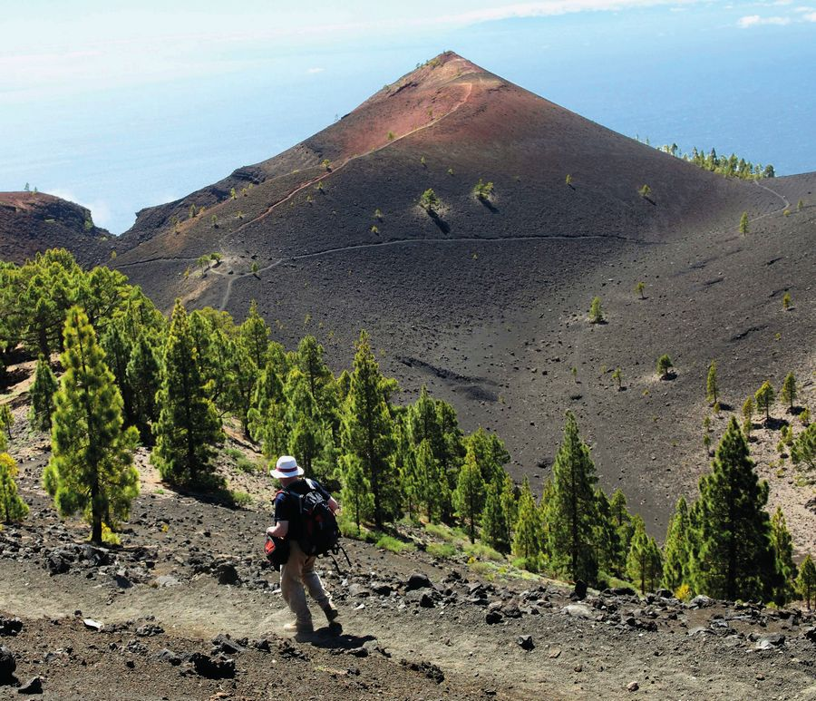

A sucessão ecológica e as relações ecológicas são temas fundamentais para compreender a dinâmica dos ecossistemas e a interação entre os organismos que neles habitam. Ao longo deste trabalho, exploramos os conceitos e processos envolvidos na sucessão ecológica, que é o processo de mudança ordenada das comunidades biológicas ao longo do tempo, resultando na formação de ecossistemas mais complexos e estáveis.
Conclusão


Observamos que a sucessão ecológica pode ser primária, quando ocorre em áreas onde não havia vida anteriormente, como após erupções vulcânicas ou formação de dunas de areia, ou secundária, quando ocorre em áreas que sofreram distúrbios, como incêndios florestais ou desmatamento. Em ambos os casos, a sucessão ecológica é impulsionada por uma série de interações ecológicas, como a competição, predação, mutualismo e decomposição.
As relações ecológicas desempenham um papel fundamental na sucessão ecológica, pois moldam a composição e estrutura das comunidades biológicas ao longo do tempo. Por exemplo, a competição entre espécies por recursos limitados pode influenciar a dominância de certas espécies em diferentes estágios da sucessão. Além disso, as relações de predação podem controlar a abundância de determinadas populações, enquanto as interações de mutualismo podem facilitar a colonização de novas espécies.
Concluímos que a sucessão ecológica é um processo dinâmico e contínuo, no qual as comunidades biológicas se adaptam e evoluem para se tornarem mais estáveis e diversificadas ao longo do tempo. A compreensão desses processos é essencial para a conservação e manejo adequado dos ecossistemas, pois nos permite prever as mudanças que ocorrerão e os impactos que podem resultar de distúrbios ambientais.
Portanto, a sucessão ecológica e as relações ecológicas são áreas de estudo cruciais para entendermos a complexidade e a interdependência dos seres vivos e seu ambiente. Ao explorar esses conceitos, podemos aprimorar nossos esforços de conservação, promover a sustentabilidade e garantir a saúde e a resiliência dos ecossistemas para as gerações futuras.